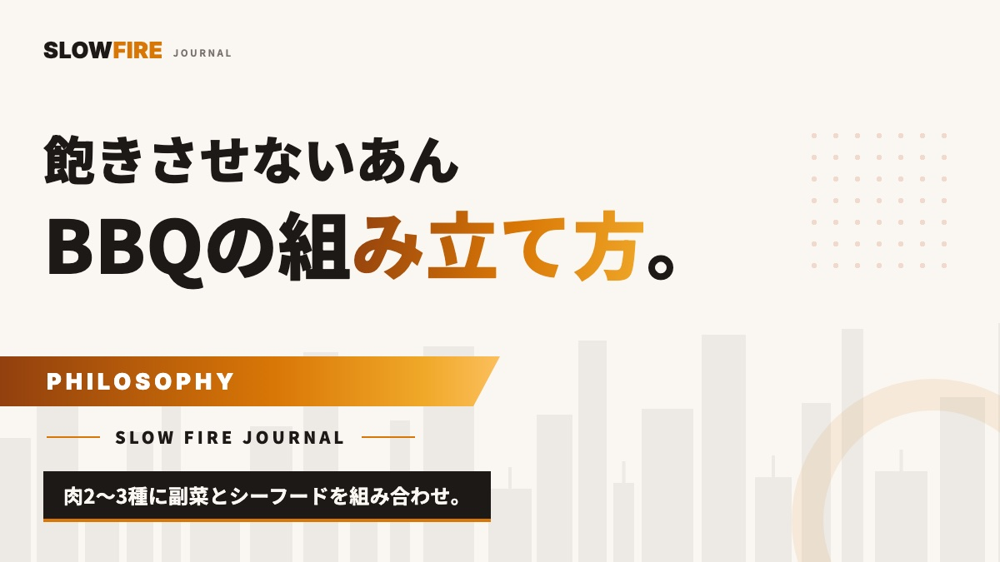

飽きさせないYORON BBQの組み立て方 — 肉2〜3種＋副菜＋シーフードの段取り設計
BBQで塊肉を一点集中で仕上げたら、みんなお腹いっぱいで、後半なんとなく間延びした…そんな経験ってありませんか。実はこれ、料理を「一皿ずつ・熱々で・少しずつ」出す設計にするだけでガラッと変わるんです。この記事では、火床を250℃と120℃の2ゾーンに分け、肉2〜3種＋副菜＋シーフードを3〜4時間で途切れなく出す組み立て方を、投入順とタイムラインまで数値で全部お渡しします。

結論：主役を1つに絞らず「少しずつ熱々を連続で出す」設計にする
まず結論からお伝えします。飽きさせないYORON BBQの正体は、豪華な塊肉を1つ育てることではなく、火床を使い分けて料理を時間差で仕上げ、熱々のうちに小分けで出し続けることなんですよね。日本人の食の本質は「少しずつ、多種多様なものを、常に熱々で」。BBQもそれに合わせて組み立てると、最後の一皿まで会話が途切れません。
具体的な骨格はシンプルです。肉2〜3種＋副菜2〜3品＋シーフード1〜2品を、3〜4時間のなかに散らします。全部を同時に焼こうとするから焦げるし、逆に一点豪華主義にすると前半で満腹→後半失速。この2つの失敗を、投入順の設計だけで両方消せます。
| 役割 | 品目例 | 火床 | だいたいの調理時間 |
|---|---|---|---|
| 先発（つまみ） | とうもろこし・シーフード | 直火250℃ | 8〜15分 |
| 中盤の主役 | 鶏もも・豚肩ロース厚切り | 間接200〜220℃ | 20〜40分 |
| じっくり組 | スペアリブ・鶏むね | 間接120〜125℃/200℃ | 25分〜数時間 |
| 締め | 焼き野菜・チーズ | 間接200℃ | 10〜20分 |
なぜ「多品種・時間差」が飽きさせないのか
理由は2つあります。1つは味覚の飽和。同じ味・同じ温度のものを大量に食べると、脳がその味に慣れて満足度が急降下します。塩気の強いラブ肉ばかりだと、3切れ目からは1切れ目の感動が出ません。ところが甘いとうもろこし→塩気の効いたラブ肉→さっぱりしたシーフードと味の質感が切り替わると、舌がリセットされて何度でも「美味しい」が戻ってくるんです。
もう1つは熱々のリレー。1品を大量に一気に仕上げると、食べ切る前に冷めます。冷めて乾いたプルドポークにソースをかけるのは、正直A5和牛を自家製タレでごまかすのと同じで、もったいない。小分けで焼いて出せば、常に湯気の立った一皿がテーブルに乗り続けます。これがYORON BBQの「熱々を、出来立てで」という原則の実務的な意味です。
塊肉を12時間かけて育てるのは、ホビーとしては最高に面白いです。ただ「日常の食として美味しい感動」を最大化したいなら、3〜4時間で完結する多品種リレーのほうが、家族やゲストの満足は上がりやすいと個人的には思っています。
火床の準備と食材の選び方（数値ベース）
ツーゾーンファイアを最初に組む
これだけは覚えておいてください。炭を火床の片側に寄せて、直火ゾーンと間接ゾーンの2つを作ること。これが多品種調理の心臓部です。直火側の網上は約250℃、間接側は蓋を閉めて約120〜220℃に調整できます。表示温度は当てにならないので、蓋の温度計に加えてプローブ式の内部温度計を必ず用意してください。1本は肉に刺しっぱなし、もう1本は測定用にあると回転が速いです。
普通のスーパーで揃う食材構成の一例（4〜5人）
- 肉①：鶏もも 2枚（約600g）— 間接で火入れ→直火で皮パリッ
- 肉②：豚肩ロース厚切り 400g — 間接でしっとり
- 肉③（余力があれば）：豚スペアリブ ハーフラック — 先にじっくり組へ
- シーフード：殻付きエビ 8尾／ホタテ 6個／鮭切り身 2切れ
- 副菜：とうもろこし 2本／パプリカ・玉ねぎ・ナス 各1個／じゃがいも 3個
肉のラブは仕込みの時点で一括で振っておくと当日の動きが軽くなります。豪州系のLow n Slow BasicsやButcher's Axeのような配合の深いラブを肉ごとに変えると、それだけで「同じ味の繰り返し」から抜けられます。ラブをたっぷり付けたら砂糖が焦げないよう、まず間接ゾーンで入れるのが鉄則です。
3〜4時間の実務タイムライン
ここが本題です。仮に食べ始めを開始1時間後に置き、そこから熱々を連続で出す流れを組みます。時刻は「開始からの経過」で書きます。
| 経過 | やること | 温度・中心温度 |
|---|---|---|
| 0:00 | 着火・ツーゾーン構築、スペアリブを間接へ | 間接120〜125℃ |
| 0:30 | じゃがいもをアルミで間接へ、鮭を杉板の準備（30分水に浸す） | 間接200℃ |
| 0:50 | とうもろこしを直火、エビ・ホタテを直火で先発 | 直火250℃／8〜12分 |
| 1:00 | 1皿目提供：とうもろこし・エビ・ホタテ | — |
| 1:10 | 豚肩ロースを間接へ、鮭を杉板で焼く | 間接200〜220℃／鮭中心53℃ |
| 1:30 | 鶏ももを間接へ | 間接200〜220℃／中心73℃ |
| 1:40 | 2皿目提供：豚肩ロース（中心63℃）＋杉板サーモン | — |
| 2:00 | 鶏ももを直火に移し皮パリッ、野菜を間接へ | 直火260〜280℃ |
| 2:10 | 3皿目提供：鶏もも＋焼き野菜 | 中心73℃ |
| 3:00〜 | スペアリブ仕上げ（中心92℃）、締めの一皿へ | 間接120〜125℃ |
| 3:30 | 締め提供：スペアリブ、余った野菜でおつまみ | — |
ポイントは、先発の火が通りやすいシーフード・とうもろこしで早めに一皿目を出すこと。ここでテーブルが盛り上がっている間に、時間のかかる肉を落ち着いて仕込めます。合計の拘束は着火から片付けまで含めても4時間ほどに収まります。
よくある失敗と回避法
- 全部同時に焼こうとして直火が渋滞する：直火ゾーンは網の30〜40%が上限と考えて、常に「今焼くもの1〜2品」に絞ります。残りは間接で待たせておくと乾きません。
- シーフードに火を入れすぎてゴムになる：エビは殻付きで両面各2〜3分、ホタテは片面2分・裏返して1分半が目安。鮭は中心53℃で止めると、しっとり仕上がります。
- 肉が冷めてから出す：焼き上がりの5〜10分後がいちばん美味しい瞬間です。大皿にためず、切ったらすぐ小皿でリレーしてください。
- ラブ肉を最初から直火に置く：砂糖入りラブは直火で一気に焦げます。間接で中心温度まで持っていき、最後の数分だけ直火で表面を締めるのが安全です。
- 味の質感が全部同じ：塩系・甘系・スモーキー系・さっぱり系を意識して散らすと飽きません。副菜に酸味（レモン・酢）を1品足すと、脂の多い肉のあとがリセットされます。
トラブルシュート
| 症状 | 原因 | その場の対処 |
|---|---|---|
| 火力が上がらない | 炭不足・空気不足 | 下部の吸気口を全開、炭を追加して10分待つ |
| 提供が渋滞して間が空く | 先発の準備が遅い | 次回は0:50までにシーフード投入を前倒し |
| 肉が乾いた | 直火で放置・オーバークック | アルミで包み間接へ移し、中心温度を測って止める |
| スペアリブが硬い | 中心温度不足 | 中心92℃まで到達させる。テキサスクラッチ（包む）で加速 |
バリエーションと応用
人数や好みで、この骨格はいくらでも動かせます。2〜3人の少人数なら肉2種＋シーフード1＋副菜2に絞り、拘束時間を3〜4時間に短縮。10人規模なら肉を3種に増やし、じっくり組にプルドポーク（豚肩・中心97℃）を入れると、後半の締めが盛り上がります。
日本の食材を主役にするのもおすすめです。ホタテやサザエ、旬の白身魚、地元の野菜を、蓋付きグリルの間接熱でじっくり火入れすると、直火だけでは出せないふっくら感が出ます。豪州ラブを魚介に軽く振ってスモーキーな一皿にするのも、意外なほど食卓が驚きます。
味の設計をもう一段こだわるなら、Stef the Maoriのような個性の強いラブを1品だけ差し込むと、その皿が「今日の主役」になります。全品に同じラブを使うのではなく、皿ごとに味の担当を変える——これが「誰が焼いても同じ味」から抜け出す、いちばん手軽な一歩かなと思います。
よくある質問
肉は何種類まで増やしていいですか？
4〜5人なら2〜3種がちょうどいいです。増やすほど直火が渋滞し、火入れの管理が難しくなります。10人規模で3種、それ以上は間接ゾーンでじっくり火を入れられるプルドポークや鶏むねなど「待たせても乾きにくい肉」を選ぶと破綻しません。まず品数より、投入の時間差を設計するのが先です。
シーフードはいつ焼くのがベストですか？
最初の一皿として開始50分あたりで直火250℃に投入するのがおすすめです。エビは殻付きで両面各2〜3分、ホタテは片面2分・裏返し1分半、鮭は杉板を使い中心53℃で止めます。火の通りが速く見栄えもいいので、時間のかかる肉を仕込む間の「つなぎ」として最適なんですよね。
3〜4時間で本当に足りますか？物足りなくないですか？
熱々を小分けで連続提供する設計なら、むしろ満足度は上がりやすいです。同じ味を大量に食べると3切れ目から感動が薄れますが、味の質感を切り替えながら少しずつ出すと最後まで飽きません。12時間級の塊肉は憧れとして別途楽しみつつ、日常の食としてはこの多品種リレーが実用的だと感じています。